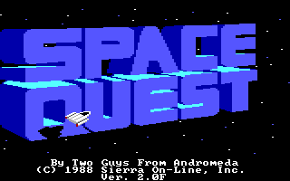
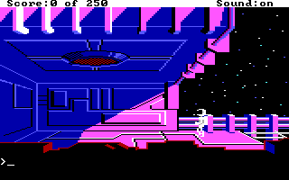

名稱：宇宙傳奇2：渥豪的復仇 (Space Quest II: Vohaul's Revenge，英文版)
簡介：Sierra 1987年出品的冒險解謎遊戲，台灣則由智冠代理進口，1994年收錄在「五合一
（Collector's Edition）」光碟裡，2006年收錄在「六合一（Collection）」光碟裡
[待補]。


備註：本版為合輯光碟2.0F版
保護：光碟版無保護，磁片版為磁片，破解碼：
SQ2.COM (或SIERRA.COM)
BB 00 02 B4 48
C3 -- -- -- --
並在下列指定位置填入資料：
00000040: 00 6B 6B 6B 6B 6B 6B 6B 6B 6B 6B 6B 6B 6B 6B 6B
-- 91 FE 0F FE 78 22 CF 43 3B 29 A5 FB D1 D4 55
00000050: 6B 6B 6B 6B 6B 6B 6B 6B 6B 6B 6B 6B 6B 6B 6B 6B
B6 72 F5 75 77 E2 3A 49 C2 59 07 3A D5 11 7C F4
00000060: 6B 6B 6B 6B 6B 6B 6B 6B 6B 6B 6B 6B 6B 6B 6B 6B
F3 6C 95 1A DA C1 70 A7 56 C3 A8 E4 EE 8E DF 00
00000070: 6B 6B 6B 6B 6B 6B 6B 6B 6B 6B 6B 6B 6B 6B 6B 6B
BB 4F 5A 50 59 8E C6 24 F5 19 19 43 86 8F 92 04
00000080: 6B 6B 6B 6B 6B 6B 6B 6B 6B 6B 6B 6B 6B 6B 6B 6B
18 88 E1 0A 43 5D 63 9B BA 99 85 9C FE FB 49 2B
00000090: 6B 6B 6B 6B 6B 6B 6B 6B 6B 6B 6B 6B 6B 6B 6B 6B
32 26 E7 DA 09 E7 8A 85 DB 21 3A D0 D7 58 D9 3F
000000A0: 6B 6B 6B 6B 6B 6B 6B 6B 6B 6B 6B 6B 6B 6B 6B 6B
52 D7 47 F2 3C 80 A0 FD B3 30 A4 61 B0 CC 37 AB
000000B0: 6B 6B 6B 6B 6B 6B 6B 6B 6B 6B 6B 6B 6B 6B 6B 6B
DF EB FE 26 8C 20 29 BE B9 E4 50 74 4B 1E 75 78
000000C0: 6B 73 73 73 73 73 73 73 73 73 73 73 73 73 73 73
63 -- -- -- -- -- -- -- -- -- -- -- -- -- -- --
備註：合輯光碟版為2.0F版，但部份檔案與2.0F磁片版不同，尚不清楚其差異。
檔案：sq2-20a.rar = 2.0A磁片版（智冠版）
sq2-20f.rar = 2.0F磁片版